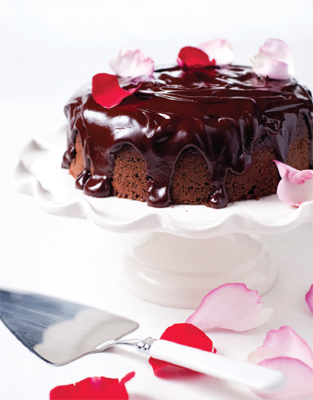
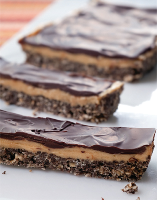
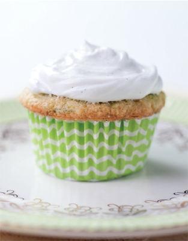
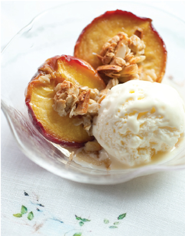
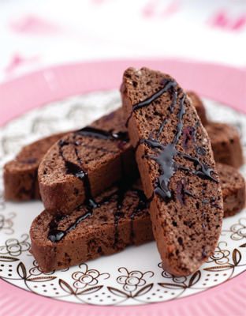
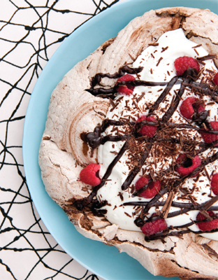
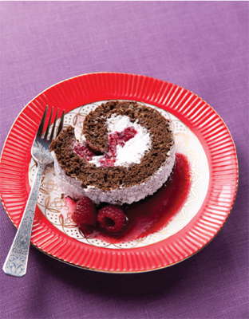
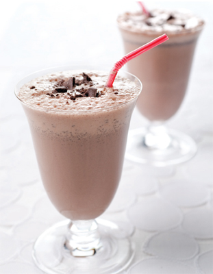

A little black coffee, ground almond, and tangy buttermilk add an air of mystery to this deeply chocolate cake. Grated beet (surprise!) is this cake’s special secret, and is a healthy way to push the sweetness and cut the calories.
SERVES 10
Calories per serving: 222
For the cake:
cooking spray
1 ½ cups self-rising flour
1/4 cup finely ground almonds
5 tablespoons cocoa powder
1 teaspoon baking soda
1/4 teaspoon salt
4 ounces beets, peeled and finely grated
4 ounces low-fat buttermilk
2 tablespoons strong black coffee
3 large eggs
3/4 cup sugar
For the icing:
½ cup dark chocolate, cut into small pieces
2 tablespoons strong black coffee
2 tablespoons honey
For the top (optional):
Organic, unsprayed rose petals
1. PREHEAT the oven to 350 degrees.
2. LIGHTLY SPRAY an 8” springform baking pan with cooking spray.
3. IN A SMALL BOWL, combine the flour, cocoa powder, ground almonds, salt, and baking soda onto a plate and set aside.
4. USING A STANDING OR HANDHELD MIXER using a medium speed, beat the eggs and sugar for 4 full minutes until pale and fluffy. On low speed, beat the beets, followed by dry ingredients. Add the buttermilk and coffee until the batter is smooth.
5. POUR into the pan and place in the middle of a hot oven and bake for 30 minutes. Test with a toothpick inserted for doneness, it should come clean. Bake for an additional 5 minutes if needed.
6. COOL for 10 minutes or so in the pan and unmold onto cooling rack. Cool on a wire rack until cold.
7. TO MAKE THE ICING, prepare a double boiler.
8. COMBINE all the ingredients and gently stir until the chocolate is smooth. Stir occasionally until the mixture thickens.
9. WITH THE CAKE still on the wire rack, pour the icing liberally over the top of the cake and let it drip down the sides. Transfer onto a plate or cake stand for serving and garnish with rose petals.
Tip
If you can’t purchase finely ground almonds, pulse blanched almonds in a food processor until they resemble cornmeal. Do not over process or they will turn into nut butter.
Versatile oatmeal takes a decidedly desserty turn in this fruity, sweet and cinnamony parfait that feels a lot like cheating—but isn’t. Light yogurt reins in the fat without compromising your need for something creamy and satisfying.
SERVES 4
Calories per serving: 473
1 pound peaches, pitted, and cut into eighths
1 pound (6) plums, pitted and quartered
6 ounces blueberries
½ teaspoon ground cinnamon
Salt
2 tablespoons maple syrup, plus
4 teaspoons, for drizzling
1 tablespoon orange juice
1 1/4 cups quick-cooking McCann’s steel-cut oatmeal
1/4 cup nonfat or low-fat yogurt
2 tablespoons chopped pecans
1. PREHEAT the oven to 450 degrees. Arrange rack in top third of the oven.
2. PLACE THE PEACHES, plums, and blueberries in a 9-by-13-inch baking dish. Sprinkle with the cinnamon and a pinch of salt. Add the maple syrup and orange juice; toss with a rubber spatula to coat. Roast until the fruit is tender, 25 to 30 minutes.
3. MEANWHILE, cook the oatmeal according to package directions.
4. TO ASSEMBLE, using about half of the total quantity of oatmeal, spoon a layer of oatmeal into the bottoms of four serving bowls. Using about half of the fruit, spoon warm fruit and juices over the oatmeal. Top with the rest of the oatmeal, and then the rest of the fruit. Spoon a dollop of yogurt on top of each, drizzle with a little more maple syrup, and sprinkle with pecans.
Put down that jar! Go ahead and pinch yourself if you’d like, but you’re not dreaming. These tasty peanut butter bars will satisfy several cravings at once and do it without breaking the fat bank.
SERVES 8
Calories per serving: 157
½ cup low-calorie thin chocolate wafers, finely ground in a food processor
½ cup old-fashioned oats
1/3 cup confectioners’ sugar
½ teaspoon salt
3 tablespoons unsalted butter, melted and cooled
1/4 cup creamy reduced-fat peanut butter
1 ½ ounces reduced-fat cream cheese, room temperature
2 teaspoons pure vanilla extract
2 tablespoons semi-sweet chocolate chips, melted
1. LINE a 9-by-4-inch loaf pan with wax paper or baking parchment leaving a 2-inch overhang on the long sides.
2. COMBINE the ground wafers, oats, sugar, and 1/4 teaspoon salt in a medium bowl. Stir in the butter until everything is evenly moistened. Stir in 1 tablespoon peanut butter until mixture forms large clumps. Transfer mixture to lined loaf pan and press into an even layer. Refrigerate until firm, about 10 minutes.
3. MEANWHILE, beat cream cheese with an electric mixer on medium speed until smooth and fluffy, about 2 minutes. Add vanilla, remaining 3 tablespoons peanut butter, and remaining 1/4 teaspoon salt, and beat on medium speed until pale and nearly doubled in volume, about 7 minutes. Transfer to the loaf pan and spread in an even layer over cookie crust. Freeze until firm, about 10 minutes.
4. SPREAD the chocolate in a thin, even layer over the chilled peanut butter layer. Refrigerate until firm, about 10 minutes. When ready to serve, lift bars out of the pan using the wax paper overhang. Cut crosswise into 8 bars and serve cold.


Zucchini wins the award for most unlikely appearance in a delicious treat, and gets glowing reviews for the texture and no-fat heft it brings to these sweet beauties. Go ahead, grab a cupcake—you deserve it!
MAKES 12 CUPCAKES
Calories per serving: 204
For the frosting:
3 large egg whites
1 cup sugar
Pinch salt
3/4 teaspoon vanilla extract
Finely grated zest of ½ lemon
For the cupcakes:
1 1/4 cups all-purpose flour
½ cup finely ground almonds
1 ½ teaspoons baking powder
1/4 teaspoon salt
2 large eggs
3/4 cup sugar
2 teaspoons vanilla extract
1 1/4 cups peeled zucchini, finely grated
1. PREHEAT the oven to 350 degrees.
2. TO MAKE THE FROSTING: Combine the egg whites, sugar, salt, and vanilla extract in a heatproof bowl set over (not in) a pan of simmering water. Stir continuously over heat until the mixture is warm and the sugar is completely dissolved, 1 to 2 minutes.
3. REMOVE the bowl from the heat. Using a handheld electric or standing mixer set on high, beat until the mixture is entirely cooled, glossy, and stiff, about 7 minutes. Blend in the lemon zest until smooth—once smooth, take care not to over beat or the mixture will get lumpy. Let frosting set and cool in the refrigerator (at least 30 minutes), while making the cupcakes.
4. TO MAKE THE CUPCAKES: Arrange a rack in the center of the oven. Line a 12-muffin pan with cupcake liners.
5. IN A BOWL, whisk together the flour, almonds, and baking powder; set aside. In another bowl, beat the eggs, sugar, salt, and vanilla with a handheld or standing mixer until thick and light colored, about 4 minutes. Beat in the zucchini on low speed until fully incorporated.
6. ADD the dry ingredients and beat on low speed until fully incorporated, scraping down the bowl once with a spatula during beating. Use a 1/3-cup measure to spoon into the muffin cups.
7. BAKE until a toothpick inserted into the center comes out clean, about 20 to 25 minutes, turning the pan midway through baking. Transfer cupcakes out onto a wire rack and cool completely before icing with the chilled frosting.
Try this simple chocolate pudding once and it will never leave your dessert repertoire. 1% milk keeps things on the right path and lets you enjoy this moment of quintessential decadence without guilt.
SERVES 4
Calories per serving: 199 1/4 cup sugar
1/4 cup Dutch process cocoa powder
3 tablespoons cornstarch
1/4 teaspoon salt
2 cups 1% milk
1 ½ ounces bittersweet chocolate
1 teaspoon pure vanilla extract
1. WHISK together sugar, cocoa, cornstarch, and salt in a medium saucepan. Set over medium heat and add the milk in a slow, steady stream, whisking constantly.
2. CONTINUE WHISKING while bringing the mixture to a bare simmer, about 5 minutes. Add the chocolate and whisk until melted, about 3 minutes.
3. REMOVE from the heat, whisk in the vanilla extract, and divide among 4 serving dishes. Chill, uncovered, until set, about 3 hours. Serve cold.
We think red velvet cake is the most alluring and mysterious of all sweets, and we really love the way it looks. Beets and red food coloring send the hue of these moist cupcakes into the stratosphere, and a touch of cocoa adds an intriguing hint of chocolate.
MAKES 12 CUPCAKES
Calories per serving: 212
For the cupcakes:
3 large eggs
3/4 cup sugar
½ cup beets, raw, peeled and finely grated
1 cup white flour
½ cup ground almonds
2 teaspoons baking powder
1 teaspoon red food coloring
2 teaspoons cocoa powder
1/3 cup buttermilk
1/4 teaspoon salt
For the icing:
1 ½ cups confectioners’ sugar
4 teaspoons water
2 teaspoons vanilla extract
1/4 teaspoon cream of tartar
1 medium egg white
Small pinch salt
1. PREHEAT the oven to 350 degrees. Line a 12-hole muffin tray with cupcake liners.
2. IN A LARGE MIXING BOWL, add the eggs, sugar, and salt, and using a handheld or standing mixer, beat on medium high for about 5 minutes, until pale and doubled in size.
3. ADD the grated beets, flour, ground almonds, cocoa powder, and baking powder. Stir to combine.
4. ADD the buttermilk and food coloring and beat again to make sure that all the ingredients are well incorporated.
5. SPOON into the cupcake liners, taking care not to fill more than two-thirds of the way up or it will overflow when cooking.
6. BAKE for 30 minutes.
7. WHILE THE CUPCAKES ARE COOKING, MAKE THE ICING: Prepare a double boiler.
8. PLACE all the ingredients in the bowl, and stir to dissolve the sugar with a clean metal spoon for exactly 4 minutes; the mixture should be warm.
9. REMOVE the bowl from the heat and beat with a hand or standing mixer on high speed, until cool and the mixture has turned into a meringue, no more than 5 minutes.
10. THE MIXTURE IS READY to use when it has formed stiff peaks.
11. PIPE OR SPREAD 1 heaping tablespoon of the icing over the cooled cupcakes, and take care to ice the cakes very quickly as the icing will start to set and is best when just made.
Tips
Chocolate Brownie with Raspberries and White Chocolate Chips
These gorgeous brownies are both sophisticated and elegant with 2 types of chocolate and colorful raspberries. Butternut squash is the fat reducing secret ingredient.
SERVES 9
Calories per serving: 291
For the brownie:
1 heaping cup fresh raspberries
2 cups butternut squash, peeled and finely grated
½ cup white chocolate, chopped into small chunks
1 cup ground almonds
1 1/4 cups sugar
3 large eggs
1/4 cup self-rising flour
½ cup Dutch process cocoa powder
1 teaspoon baking powder
1/4 teaspoon salt
For the icing:
Cocoa powder, for garnish
1. PREHEAT the oven to 400 degrees.
2. LINE the pan with parchment paper. A big square placed over the top is enough, if you then cut into each corner to make a neat pleat. It’s also a good idea to dot a tiny bit of oil on the base and sides to help the paper stick down.
3. ADD the eggs and sugar into a large bowl, and using a handheld or standing mixer, beat on medium high speed 4–5 minutes until pale, fluffy and quadrupled in size.
4. ADD the grated butternut squash and the flour, ground almonds, cocoa powder, salt and baking powder. Beat until well incorporated. Pour half of this mixture into the prepared tin. Scatter the raspberries and chocolate chips over the top. Top with remaining batter.
5. BAKE for 20 minutes until just cooked.
6. LET COOL in the pan for 20 minutes and garnish with sifted cocoa powder before serving.
Tips
Mint and chocolate collide with delicious results in these easy low-fat cupcakes. We love the playfulness of shocking green icing contrasting with the sophisticated dark chocolate shavings in these cupcakes that feel at home on linen or in a lunch box.
MAKES 12 CUPCAKES
Calories per serving: 336
For the cupcakes:
2 large eggs
3/4 cup sugar
1 heaped cup peeled and finely grated sweet potato
½ cup finely ground almonds
3/4 cup plain flour
1 teaspoon peppermint extract
1/4 teaspoon salt
1 tablespoon Dutch process cocoa powder
2 teaspoons baking powder
3/4 cup dark chocolate chips or mint chocolate bar cut into chunks
For the icing:
2 cups confectioners’ sugar
2 ounces unsalted butter, room temperature
½ teaspoon green food coloring
1 teaspoon peppermint extract
2 tablespoons cold water
For the top:
Shavings of dark chocolate
1. PREHEAT the oven to 350 degrees. Line a 12-hole muffin pan with paper liners.
2. USING A HANDHELD OR STANDING MIXER, whisk the eggs and sugar for 5 minutes, until pale and quadrupled in size. Add the grated sweet potato and whisk again. Whisk in the ground almonds, flour, peppermint extract, salt, cocoa powder, and baking powder until they are well combined. Add the chocolate chunks or chips and using a spatula, mix so that they are evenly distributed.
3. DIVIDE the batter evenly between the cupcake liners so that each liner is half-filled. This will give them enough space to puff up and rise to the top while baking.
4. BAKE at 350 degrees for 20 minutes. They will be somewhat flat on top rather than dome shaped.
5. ONCE COOKED, remove from the oven and cool for 15 minutes. Transfer to the refrigerator until the cupcakes are cold. The cupcakes will need to be cold to keep the icing from sliding off.
6. WHILE THE CUPCAKES ARE BAKING, MAKE THE ICING: With a wooden spoon or mixer, beat the butter with one heaped tablespoon of the sugar, the peppermint extract and coloring for a minute until they are all incorporated and the butter has softened slightly. Add the confectioners’ sugar one heaped tablespoon at a time, with half a teaspoon of water each time you add the sugar, and beat between each addition. Once all the sugar is added, you should have a soft green paste.
7. ICE each cold cupcake, using just over a tablespoon of frosting per cupcake. Finish by sprinkling dark chocolate shavings over the top of each one.

Ground cardamom is the real secret to this dessert. Its mysterious essence imbues the peaches with complex and haunting notes you really don’t expect to find. Makes this crisp a real revelation.
SERVES 4
Calories per serving: 179
2 ripe peaches, halved and pitted
2 tablespoons honey
1 large egg white
2 tablespoons sugar
2 teaspoons vegetable oil
1/4 teaspoon salt
Pinch of ground cardamom
1/3 cup slivered almonds
1/4 cup old-fashioned oats
1. PREHEAT oven to 425 degrees.
2. ARRANGE the peaches, cut side up, in a small glass or ceramic baking dish, and drizzle with honey. Pour 2 tablespoons water in the dish. Bake until tender and tops are caramelized, 30 to 40 minutes.
3. MEANWHILE, whisk together egg white, sugar, oil, salt, and cardamom until well blended. Stir in almonds and oats until evenly coated. Spread mixture in an even layer on a small, rimmed baking sheet. Place in the oven alongside the peaches and bake until golden brown, about 10 minutes. Remove from the oven and cool completely. (The mixture will crisp as it cools.)
4. TRANSFER each peach half to individual serving dishes. Break the almond mixture into large pieces, and arrange decoratively on peaches. Serve immediately.
Tip
Serve with low-fat vanilla ice cream or yogurt.
These aren’t the same old oatmeal cookies you grew up with. Not by a long shot. The whiskey and dark brown sugar guarantee that. Plus you lose a lot of the fat by replacing it with an all-fruit substitute, keeping the cookies moist without the usual compromises.
MAKES ABOUT 40 (2 ½-INCH) COOKIES
Calories per cookie: 116
2 tablespoons whiskey, or rum
2/3 cup raisins
8 tablespoons unsalted butter, at room temperature
1/4 cup natural unsweetened applesauce
3/4 cup firmly packed dark brown sugar
3/4 cup granulated sugar
½ teaspoon salt
1 large egg
1 large egg white
1/4 cup milk
2 teaspoons pure vanilla extract
2 cups all-purpose flour
1 teaspoon baking soda
½ teaspoon cinnamon
2 cups oats (not instant)
1. SET the oven rack in the middle position. Preheat the oven to 350 degrees. Line 2 baking sheets with parchment paper or spray with nonstick cooking spray; set aside.
2. SPRINKLE the whiskey or rum over the raisins in a bowl and let stand while you assemble the batter.
3. USING A HANDHELD OR STANDING MIXER, beat the butter, applesauce, brown sugar, granulated sugar, and salt on medium-high speed until light and fluffy, 2 to 3 minutes, scraping down the sides of the bowl halfway through. Beat in the egg and egg white, milk, and vanilla.
4. IN A MEDIUM BOWL, whisk together the flour, baking soda, and cinnamon, add to the batter, and beat just until the flour is absorbed. Gently fold in the oats with a rubber scraper.
5. USE 2 spoons to scoop out the batter by rounded teaspoonfuls onto the prepared baking sheets, 1 ½ inches apart. Bake until the cookies are set but still soft in the centers, and beginning to brown on the edges, 17 to 20 minutes.
6. LET cool on a wire rack.
Tip
Line the baking sheet with parchment paper instead of greasing with butter or oil; the paper adds no calories, keeps the cookies from sticking, and gets rid of the need to clean the baking sheet.
Think a frothy iced cappuccino topped with sweet whipped cream is totally out of the question? Think again! All you have to do is bolster that healthy skim milk with a little fat-free yogurt and you’ve got something thick, delicious, and ready to dollop.
SERVES 4
Calories per serving: 110
For the cappuccino:
1 cup coffee, cooled or 2 shots espresso
1 cup skim milk
3 tablespoons fat-free plain Greek yogurt
5 tablespoons fat-free chocolate syrup
1 cup ice
For the whipped cream:
½ cup heavy cream
1 teaspoon confectioners’ sugar
1. FOR THE CAPPUCCINO: Place the coffee, milk, yogurt, syrup, and ice in a blender and blend until desired.
2. FOR THE WHIPPED CREAM: In a large mixing bowl, beat the cream until soft peaks form. Add the confectioners’ sugar. Continue to beat until stiff peaks form. At this point, you may add extracts or any additional flavorings you may like.
3. FOR THE ASSEMBLY: Pour the cappuccino in a glass and top with whipped cream. Garnish with a sprig of fresh mint.
Chocolate and Cranberry Biscotti
Delightful with coffee or just on their own, these crunchy cookies blend almond and cranberry with vanilla and a hint of chocolate for a sophisticated not-too-sweet treat. Best part—you can eat two without any guilt.
MAKES ABOUT 1 ½ DOZEN
Calories per biscotti: 76
3/4 cup all-purpose flour
1/4 cup finely ground almonds
3 tablespoons Dutch-process cocoa powder
3/4 teaspoon baking powder
1/4 teaspoon salt
1 large egg
1/3 cup sugar
2 teaspoons pure vanilla extract
½ teaspoon almond extract
1/3 cup dried cranberries melted chocolate for drizzling
1. PREHEAT oven to 350 degrees and arrange a rack in the center of the oven. Line a baking sheet with parchment paper.
2. WHISK together flour, ground almonds, cocoa powder, baking powder, and salt in a medium bowl.
3. BEAT egg and sugar with a handheld or standing mixer on medium-high speed until pale and thick, about 5 minutes. Beat in vanilla and almond extracts. Reduce speed to low, and gradually add flour mixture. Beat until no traces of flour remain. Stir in cranberries. The dough will be very wet and sticky.
4. SCRAPE the dough in a thick line in the center of the prepared baking sheet. Wet your hands and pat dough into a 9-by-3-inch rectangle. Bake until puffed and dry to the touch, about 25 minutes. Cool on pan for 15 minutes; keep oven on. Peel off parchment and carefully transfer rectangle to a cutting board. Cut crosswise into 1/3-inch-thick slices.

5. LAY slices flat on unlined baking sheet, and bake until dry, about 10 minutes. Flip slices and bake for 10 minutes more. Let cool completely. Cookies will crisp as they cool.
5. DRIZZLE with melted chocolate if desired.
Tips
These traditional, comforting flavors come together in a wonderful way in this delicious and nutritious cake. Your friends won’t believe you when you say the secret to this cake’s fantastic texture is healthy white sweet potato. Healthy cake? They’ll never suspect a thing.
SERVES 12
Calories per serving: 243
For the cake:
1 large apple (about 10 ounces) juice of 1 lemon
1 1/4 cups finely ground almonds
1 cup self-rising flour
1 teaspoon baking soda
1/4 teaspoon salt
1 tablespoon ground cinnamon
3 large eggs
3/4 cup superfine sugar
2 cups peeled sweet potato, finely grated (the white variety), grated at the very last minute to prevent discoloration
2 teaspoons vanilla extract
For the icing:
1 cup confectioners’ sugar, sifted
4 tablespoons fresh lemon juice
1. PREHEAT the oven to 350 degrees. Grease the base and sides of an 8-inch springform pan with a little vegetable oil and a pastry brush. Line the pan with parchment paper.
2. PEEL, core and chop the apple into 1/4 inch cubes. Toss them in a small bowl with some lemon juice to prevent oxidation.
3. IN A SEPARATE BOWL, combine the ground almonds, flour, baking soda, salt and cinnamon. Set aside.
4. IN A LARGE MIXING BOWL using a handheld or standing mixer, whisk together the eggs and sugar until pale and tripled in size, about 3 minutes on high speed. Add the grated sweet potato and whisk to combine. Lower the speed and add the dry ingredients to the bowl. Add the vanilla extract and mix. Using a rubber spatula, gently fold in the apple cubes.
5. POUR the batter into the prepared pan and bake for 30 minutes. Cover the top with aluminium foil and bake for an additional 30 minutes.
6. ONCE COOKED, cool on a wire rack for 10 minutes and make the icing.
7. TO MAKE THE ICING, stir the sifted sugar with the lemon juice. Drizzle liberally over the top of the cake, spreading with a knife to even out, and serve.
You always think carrot cake will be good for you until you taste the tons of fat in each bite. Well, here’s a cake that actually lives up to the promise by being super low in fat. Sweet golden raisins, orange juice, and nuts team up to take this cake’s spicy flavors over the top while classic cream cheese icing delivers a taste that screams “carrot cake.”
SERVES 9
Calories per serving: 310
For the cake:
1 orange
1 lemon
3/4 cup golden raisins
3 medium eggs
1 1/4 cups light brown sugar
2 ½ cups carrots, finely grated
1 cup self-rising flour
1 teaspoon cinnamon
½ teaspoon ground ginger
1 teaspoon baking soda
1/4 teaspoon salt
1 cup ground almonds
1/4 cup walnuts, roughly chopped
For the icing:
3 cups confectioners’ sugar
½ cup full-fat cream cheese
1 teaspoon fresh lemon juice finely grated zest of ½ lemon
1. PREHEAT the oven to 350 degrees.
2. LINE the base of an 8-inch square pan with parchment paper. Lightly brush over the base and sides with a little vegetable oil.
3. GRATE the zest of the orange and the lemon and set aside. Squeeze the orange juice into a bowl and add the golden raisins to the juice. Set aside.
4. WHISK the eggs and sugar with the orange and lemon zest using a handheld or standing mixer for five minutes until pale and full of air. Add the grated carrot and beat to incorporate.
5. SLOWLY ADD in the spices, salt, ground almonds, baking soda and flour, then quickly mix until all the ingredients are combined.
6. USING A SPATULA, mix in the golden raisins, along with any orange juice left in the bowl, along with the walnuts until they are evenly distributed.
7. POUR into the prepared pan and bake for 40 minutes.
8. WHEN A TOOTHPICK INSERTED into the center of the cake is removed and comes clean, remove from the oven. Cool in the pan for 15 minutes, then remove from the pan. Chill in refrigerator for an hour once cooled.
9. TO MAKE THE ICING: In a large bowl, beat the first cup of sugar with the cream cheese using a wooden spoon. Once you reach a paste, add the remaining sugar along with the lemon juice and zest. Beat vigorously to combine. Refrigerate at least a half hour. Ice all over the top of the cold cake, slice into 9 portions and serve.
Tips
A seam of bright yellow lemon curd holds together layers of this orange and lemon cake with the hidden addition of grated squash for texture and fat replacement. The orange icing keeps the whole thing from floating straight up to heaven, where your first bite will surely transport you.
SERVES 10
Calories per serving: 222
For the cake:
3 large eggs
½ cup sugar
2 cups peeled butternut squash, finely grated
1 cup self-rising flour
1 1/4 cups finely ground almonds
1 teaspoon baking soda
1/4 teaspoon salt
2 oranges
2 lemons
For the middle:
3 tablespoons store-bought
lemon curd
For the icing:
3/4 cup confectioners’ sugar, sifted
2 tablespoons butter, at room temperature
2 tablespoons fresh orange juice
1. PREHEAT the oven to 350 degrees.
2. GREASE the base and sides of two 7-inch spring form pans with a little vegetable oil. Place a circle of baking paper into the bottom of the tins and grease again.
3. IN A LARGE MIXING BOWL, using a handheld or standing mixer, beat the eggs and the sugar for a full 3 minutes until pale and light. Add the grated butternut squash and mix until well combined.
4. ZEST the oranges and lemons with a microplane and add to the flour, ground almonds, baking soda, and salt. Whisk to combine the mixture.
5. DIVIDE the batter between the prepared pans and bake for 30 minutes.
6. WHILE THE CAKES ARE COOKING, MAKE THE ICING: Beat the softened butter with the sugar using the back of a wooden spoon until it has the consistency of a stiff paste. Add the orange juice and beat again to combine and smooth. Refrigerate until needed.
7. COOL the cake in the pan for 10 minutes. Run a knife all around the edge of both cakes.
8. UNMOLD the cakes onto a wire rack and remove the paper on the base. Flip them back onto their bases again so that they can cool right side up on the wire rack and avoid getting any lines.
9. CHILL the cakes in the refrigerator for 20 minutes.
10. TOP one layer of cake with lemon curd, top with other cake layer.
11. SPREAD the icing over the top of the cake and decorate with a little orange and lemon zest.

It’s like tasting a sweet cloud when you grab a forkful of this lighter-than-air dessert, dolloped with cream, raspberries, or your favorite berries such as blackberries or strawberries.
SERVES 6
Calories per serving: 337
For the pavlova:
4 egg whites
1/4 teaspoon salt
1 cup sugar
½ teaspoon lemon juice
1 tablespoon cocoa powder
For the topping:
1 cup whipping cream
1 cup fresh raspberries
1/4 cup shaved dark chocolate
1/4 cup melted chocolate for drizzling
1. PREHEAT the oven to 300 degrees and line a baking sheet with parchment paper.
2. WHISK the egg whites and salt on high speed until they hold their shape. Add the sugar gradually until the mixture stands in firm peaks. Add the lemon juice and whisk just to incorporate. Sift the cocoa powder into a small corner of the bowl and lightly fold it into the meringue using a plastic spatula. Do not overmix or you will lose the rippled effect. Pour the meringue onto the parchment-lined sheet pan in an oval shape, roughly 3-inches by 5-inches and 2-inches high. Place into the bottom of the oven and bake for 1 hour and 15 minutes.
3. SWITCH OFF the oven without opening the door and leave the pavlova in the turned-off oven for one hour. Remove and set aside.
4. FOR THE TOPPING: Whisk the whipping cream into semi-stiff peaks and spoon on top of the pavlova. Sprinkle with raspberries and shaved chocolate before serving. Finish with drizzled chocolate.
Tips
Chocolate and Raspberry Roulade with Raspberry Sauce
Tender chocolate cake gets invited to a rocking raspberry party in this fruity dessert. Filled, rolled, and topped with a sweet raspberry sauce, we love the way it goes with tea and caps off a meal.
SERVES 9
Calories per serving, roulade: 190
Calories per serving, raspberry sauce: 26
For the roulade:
Confectioners’ sugar, for dusting the pan
4 large eggs, separated
½ cup sugar
1/4 teaspoon salt
3 tablespoons Dutch-process cocoa powder, sifted, plus more for serving
3/4 cup peeled and finely grated carrots
3/4 cup self-rising flour, sifted
For the filling:
3/4 cup heavy cream
2 tablespoons confectioners’ sugar, sifted
1 teaspoon vanilla extract
1 cup raspberries
For the raspberry sauce:
1 ½ cups raspberries
1/3 cup confectioners’ sugar
1/4 cup water
1 9-by-13-inch jelly roll pan
Parchment paper, cut to size
1. PREHEAT oven to 375 degrees.
2. CUT a piece of parchment paper to the size of the jelly roll pan and dust with some sifted confectioners’ sugar. Set aside.
3. REMOVE 2 tablespoons of sugar and add to a bowl with egg whites, along with the salt. Using a handheld or standing mixer, whip the egg whites until stiff peaks form, about 5 minutes. Take care not to over-mix as the egg whites will become grainy. Set aside.

4. ADD the remaining sugar to the egg yolks and whisk about 3 minutes, until it is pale and fluffy and holds a ribbon trail when you lift the blades. Add the sifted cocoa powder to the yolk/sugar mixture one tablespoon at a time, whisking it until fully incorporated before adding the next. Once all the cocoa powder is well combined, add the grated carrots and mix well to incorporate.
5. USING A RUBBER SPATULA, fold the egg white mixture, one-third at a time, into the yolk mixture, taking care not to deflate the mix. Add the sifted flour into the mixture as you add the last third of the egg whites. Fold as before until all the elements are well combined with no pockets of flour left.
6. POUR the batter into the center of the jelly roll pan and tilt it to spread the batter evenly all over the pan, making sure it goes all the way into the corners. Do not pat or knock on the pan as this will deflate the batter. Bake for 10 minutes.
7. WHILE THE CAKE IS BAKING, make the filling. Using a handheld or standing mixer, beat the heavy cream for about 30 seconds. Add the confectioners’ sugar and vanilla extract and continue to beat until you get stiff peaks. Once ready, refrigerate until needed.
8. TO ASSEMBLE THE CAKE, lay a clean kitchen towel on a flat, even surface and place a piece of parchment paper the size of the cake on top of the towel. Once the cake is cooked, working quickly, remove it from the oven and run a paring knife along the edges of the jelly roll pan to help unmold the cake. Take the cake from the edges and flip it onto the parchment paper set on top of the kitchen towel. Peel off the parchment paper.
9. STARTING at one end of the towel, roll the cake into a cigar shape, rolling it tightly into a classic jelly roll shape. Continue rolling until the cake is rolled and tucked inside the kitchen towel. Let it stand for 15 to 20 minutes to cool and semi-set in a snail shape while you make the raspberry sauce.
10. TO MAKE THE RASPBERRY SAUCE: Add the raspberries, confectioners’ sugar and water to a nonstick sauté pan and cook over medium heat, until the raspberries begin to break down and become liquid. Let simmer for about 5 minutes and strain through a sieve into a small saucepan and reduce until thick and syrupy.
11. ONCE THE CAKE HAS COOLED, unroll it from the kitchen towel and remove the parchment paper. Spread the whipped cream evenly over the interior of the cake and sprinkle the raspberries. Roll the roulade snugly once again, making sure to tuck in the raspberries as you go along. It may seem like not all of them will fit, but continue to tuck the fruits in generously as you go and they will. Place the roulade on a tray or platter and sprinkle some confectioners’ sugar over it. Refrigerate until ready to serve, at least 30 minutes.
12. TO SERVE, cut the roll into nine slices and serve with some raspberry sauce.
Vanilla and Strawberry Sponge Cake
The yin and yang of strawberry and vanilla play out on a sweet sponge cake stage. It’s a fresh light sweet you’ll find a good reason to linger over.
SERVES 10
Calories per serving: 314
For the cake:
1 ½ cups self-rising flour
1 cup finely ground almonds
1 teaspoon baking soda
3 large eggs
1 cup sugar
Zest of ½ lemon
1 vanilla bean, split lengthways with seeds scraped out and reserved
2 ½ cups zucchini, peeled and finely grated
1/4 teaspoon salt
For the filling:
10 strawberries, washed and hulled
4 tablespoons of icing (recipe below)
For the icing:
2 tablespoons butter, cut into small cubes and at room temperature
1 ½ cups confectioners’ sugar
1 teaspoon vanilla extract
2 tablespoons heavy cream
8 washed strawberries, halved
1. PREHEAT the oven to 350 degrees.
2. USING A PASTRY BRUSH, lightly oil the base and sides of two 7 x 2-inch high springform cake pans. Line the bottoms with parchment paper and brush again with a little more oil.
3. COMBINE the flour, ground almonds, baking soda, and salt in a small bowl.
4. USING A HANDHELD OR STANDING MIXER, whisk the eggs, sugar, lemon zest, and scraped out vanilla seeds until light and fluffy.
5. ADD the grated zucchini and whisk to incorporate.
6. WHISK in the dry ingredients until they are just combined.
7. DIVIDE this mixture between the two springform pans and bake for 30 minutes.
8. COOL on a wire rack while you make the icing.
9. TO MAKE THE ICING, using a handheld or standing mixer, beat the butter until it is softened and pale. Add the sugar a spoonful at a time to form a creamy paste. Add the cream and vanilla extract and mix well. Refrigerate for at least 20 minutes before icing.
10. SPREAD a thin layer of icing on the top of one cake. Top with half the strawberries. Flip over the other cake and ice the bottom, then place this icing side down to sandwich the strawberries.
11. ICE the top of the cake and arrange the remaining strawberries on top and serve.
Tip
You can substitute 1 teaspoon vanilla extract for the vanilla bean.
Old time malt shop flavor without the guilt. Slimmed down dairy and pure vanilla extract may fool you into thinking you’re sinning when you’re really being good.
SERVES 4
Calories per serving: 169
1 pint low-fat chocolate ice cream, slightly softened
2 packages low-calorie chocolate wafers (about 30 total)
1/3 cup 1% milk
1 teaspoon pure vanilla extract
1. IN A BLENDER, place the ice cream, about 30 thin low calorie wafer cookies, and 1% milk. Add the pure vanilla extract and blend until most of the wafers are broken, leaving a few larger chunks. Pour into 4 glasses and enjoy.
